玉林丽晶国际大酒店 Lijing International Hote
玉林丽晶国际大酒店位于玉林市人民东路，地处市中心十字路口，与玉林市三大银行、市政府遥相望，旁边设有大型购物中心，距离市客运中心、市东郊汽车站约5分钟车程。
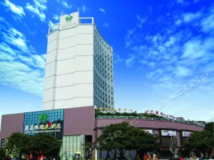 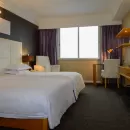酒店总建筑面积28000平米、楼高共20层（含地下一层）；提供具有粤菜特色的中、西餐服务、早茶服务、娱乐服务及位居高楼层、视野辽阔的客房服务。莅临丽晶国际大酒店，让你行的方便、住得舒心、用的放心。
单间：150左右
入住时间：10:00以后 离店时间：14:00以前
形式：自助餐 价格：RMB 38/人
泊尔曼酒店(玉林青年广场市一店) Boerman Hotel
玉林泊尔曼酒店位于广西玉林市人民东路，周围邻近金城商厦、第一购物中心。
玉林泊尔曼酒店严格按星级服务标准执行，硬、软件均按星级要求配备。客房内厨卫设施齐备，生活设施完善，环境温馨、舒适，是您旅行下榻、情侣欢聚、商务出差的理想之选。
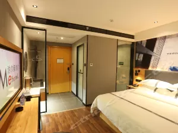
单间：150左右
入住时间：10:00以后 离店时间：14:00以前
早餐类型：中式、素食 价格：RMB 12/人
营业时间：星期一、二、三、四、五、六、日 07:30至10:00
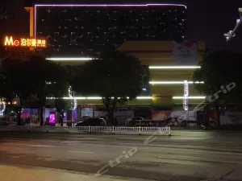 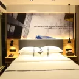玉林金刚郎商务宾馆 Guohua Hotel
玉林金刚郎商务宾馆位于大南路，距玉林知名地标云天宫文化城与人民公园，会展中心直线距离约0.9公里处，玉林汽车总站约3分钟车程，同时也位于玉林市市中心繁华地段，宾馆周边商圈有玉林步行街、南城商业街，国际购物中心均可以为各位宾客提供购物逛街的需求。宾馆正对面便是玉林母亲河南流江，在房间里江景城市夜景一览无遗，您可根据时间提前做好行程安排。
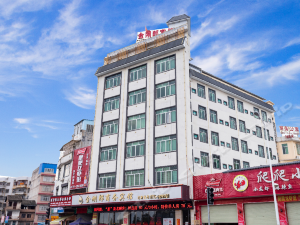 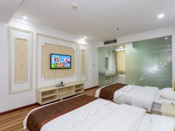宾馆为您在客房内配备了空调、液晶电视机和房间内WIFI高速上网，所有入住的客人均可便捷的使用。服务人员会提前为您准备好电热水壶和咖啡壶/茶壶，以满足您的饮水需求。浴室内提供拖鞋、24小时热水和吹风机，让您感受到宾至如归的享受。
价格：136-250元
入住时间：14:00以后 离店时间：12:00以前
早餐信息：酒店不提供早餐
千宜酒店(玉林云天宫店) Qeckin Hotel (Yulin Yuntian Palace)
千宜酒店(玉林云天宫店)追求“简约、温馨、灵动”的酒店理念和“热情、舒适、洁净”的服务理念。致力于打造高端品牌，以高质量的服务、高要求的住房标准，追溯心灵气息家园以舒适酒店的本真，出门在外千宜酒店依然会温馨如家！
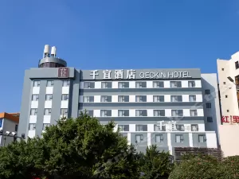 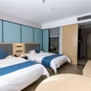
价格：170-230元
入住时间：14:00以后 离店时间：12:00以前
早餐信息：酒店不提供早餐
名人酒店(玉林城站店) Celebrities Hotel (Yulincheng Station)
酒店环境舒适、位置优越、交通便利，店内设施新颖时尚，别具一格，为满足不同客户需求，本店精心打造出情侣、动感、田园风、女性浪漫主题房等多元化的房型供各方宾客选择。酒店秉承“真品质，好睡眠”的服务理念致力于为客户提供高附加值享受及良好的睡眠体验，是您商业洽谈、出差旅行的至佳选择！
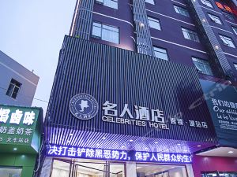 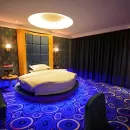价格：158-300元
入住时间：14:00以后 离店时间：12:00以前
早餐类型：中式 价格：RMB 10/人
雅斯特酒店(玉林中药港大润发店) Yeste Hotel (Yulin Zhongyaogang RT-Mart)
雅斯特酒店(玉林中药港大润发店)位于玉林市民主南路，南靠大润发购物中心（约20米）购物、美食方便，临近全国大型的封闭式中药材市场玉林中药港（约500米）、云天宫文化城（约600米）、国际会展中心（300米）、玉林体育馆（约500米），毗邻万达广场，车程5分钟（2公里）。
酒店是雅斯特连锁酒店集团在玉林的一家分店，内部设备设施齐全，24小时热水、智能蓝牙音箱、WIFI全覆盖、大型免费停车场，自助洗衣房，自助早餐、免费咖啡奶茶、快速入住、会员免查房；是您出行住宿便捷舒适的优选。
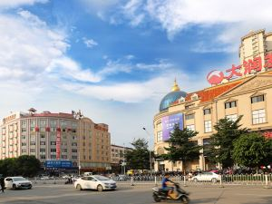价格：179-250
入住时间：10:00以后 离店时间：14:00以前
早餐类型：中式 价格：详询酒店
不可携带宠物。
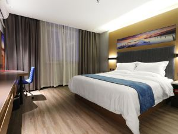一切让心去旅行，在雅斯特酒店，您拥有的不仅仅是舒适的大床、洁净的环境、高速的互联网、现代淋浴空间、美味营养的自助早餐以及甜美、友好的微笑，而更多的是一份浓浓的关怀和一次无以伦比的住宿体验：让咖啡的香气、阅读的灵气融入淡淡的音乐之中，让唯美的画廊带你穿梭在地中海的悦途之旅，一天的疲惫在优美的旋律中渐渐消除。